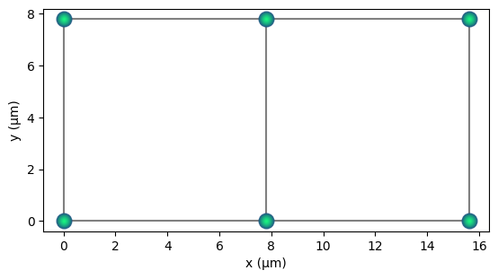
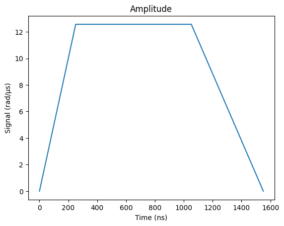
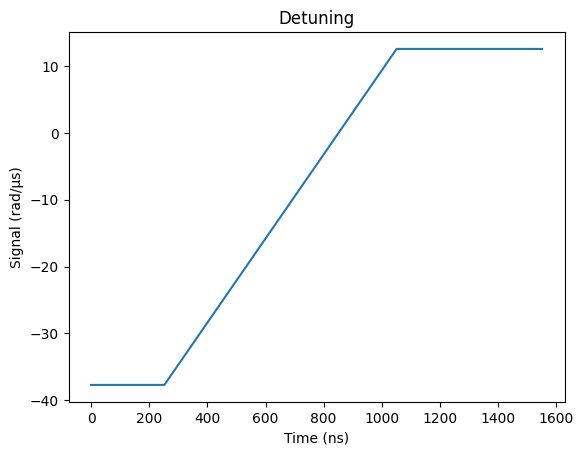
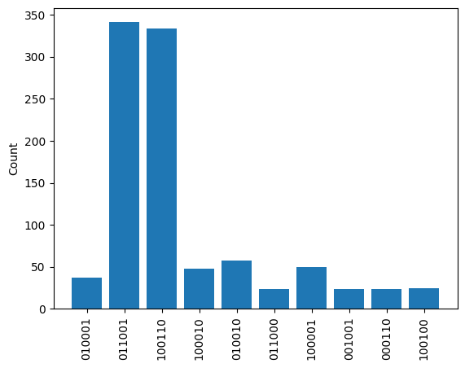
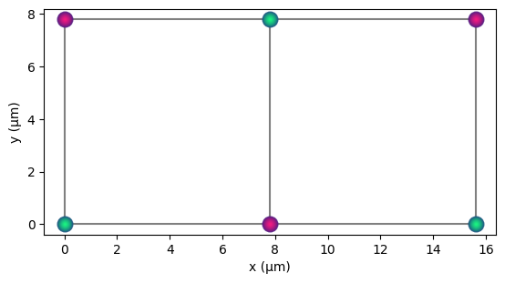
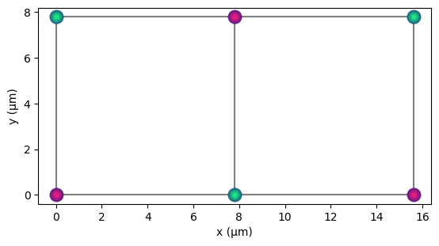

Calculation Example#
The following tutorial shows how to use qse to run a calculation.
We use pulser here for the backend.
import matplotlib.pyplot as plt
import numpy as np
import qse
Create a 2D square lattice#
We generate the qbits object that represents a 2D lattice, keeping the lattice spacing a bit below the blockade radius keeps the nearest neighbours antiferromagnetic.
omega_max = 2.0 * 2 * np.pi # rad/µs
rabi_frequency = omega_max / 2.0 # rad/µs
blockade_radius = qse.calc.blockade_radius(rabi_frequency)
q2d = qse.lattices.square(
lattice_spacing=0.8 * blockade_radius, repeats_x=3, repeats_y=2
)
print(f"Blockade radius: {blockade_radius:.2f} µm")
q2d.draw(radius="nearest", units="µm")
Blockade radius: 9.76 µm

Create the hamiltonian#
delta_0 = -6 * rabi_frequency # ns
delta_f = 2 * rabi_frequency # ns
t_rise = 252 # ns
t_fall = 500 # ns
t_sweep = int((delta_f - delta_0) / (2 * np.pi * 10) * 1000) # ns
amplitude_afm = qse.Signals()
amplitude_afm += qse.Signal(np.linspace(0.0, omega_max, t_rise))
amplitude_afm += qse.Signal([omega_max], t_sweep)
amplitude_afm += qse.Signal(np.linspace(omega_max, 0.0, t_fall))
fig = amplitude_afm.draw("ns", "rad/µs")
plt.title("Amplitude")
plt.show()

detuning_afm = qse.Signals()
detuning_afm += qse.Signal([delta_0], t_rise)
detuning_afm += qse.Signal(np.linspace(delta_0, delta_f, t_sweep))
detuning_afm += qse.Signal([delta_f], t_fall)
fig = detuning_afm.draw("ns", "rad/µs")
plt.title("Detuning")
plt.show()

# Check both signals have the same duration
assert amplitude_afm.duration == detuning_afm.duration
Set up the calculator and run the job#
pcalc = qse.calc.Pulser(qbits=q2d, amplitude=amplitude_afm, detuning=detuning_afm)
pcalc.build_sequence()
pcalc.calculate()
10.1%. Run time: 0.00s. Est. time left: 00:00:00:00
20.0%. Run time: 0.01s. Est. time left: 00:00:00:00
30.0%. Run time: 0.01s. Est. time left: 00:00:00:00
40.0%. Run time: 0.01s. Est. time left: 00:00:00:00
50.0%. Run time: 0.01s. Est. time left: 00:00:00:00
60.1%. Run time: 0.02s. Est. time left: 00:00:00:00
70.0%. Run time: 0.02s. Est. time left: 00:00:00:00
80.0%. Run time: 0.02s. Est. time left: 00:00:00:00
90.0%. Run time: 0.03s. Est. time left: 00:00:00:00
100.0%. Run time: 0.03s. Est. time left: 00:00:00:00
Total run time: 0.03s
time in compute and simulation = 0.09405851364135742 s.
Sample the result#
count = pcalc.results.sample_final_state(N_samples=1000)
most_freq = {k: v for k, v in count.items() if v > 10}
plt.bar(list(most_freq.keys()), list(most_freq.values()))
plt.xticks(rotation="vertical")
plt.ylabel("Count")
plt.show()

The states 011001 and 100110 are the most prevalent, we can visualise them using the colouring parameter in draw.
We see that they correspond to anti-ferromagnetic orderings.
q2d.draw(radius="nearest", colouring="011001", units="µm")

q2d.draw(radius="nearest", colouring="100110", units="µm")

Version#
qse.utils.print_environment()
Python version: 3.12.13
qse version: 1.1.4